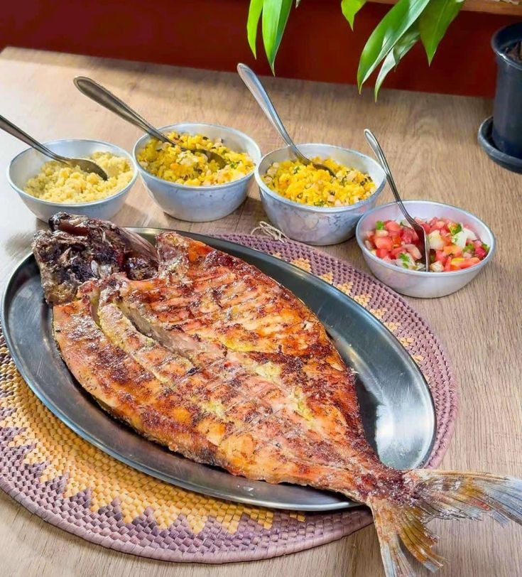

Pacu Assado
O Pacu Assado é típico das regiões pantaneiras, valorizando o peixe de água doce assado com temperos simples que realçam seu sabor natural.

Ingredientes
- 1 pacu inteiro limpo
- Suco de 2 limões
- 2 dentes de alho amassados
- Sal e pimenta-do-reino a gosto
- Folhas de bananeira para assar (opcional)
Modo de Preparo
- Tempere o pacu com limão, alho, sal e pimenta.
- Envolva o peixe em folhas de bananeira ou coloque em assadeira.
- Asse em forno médio por 40-50 minutos, até ficar dourado.
Dica do Chef: Servir com arroz branco e molho de pequi opcional dá um toque típico da região.